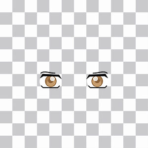
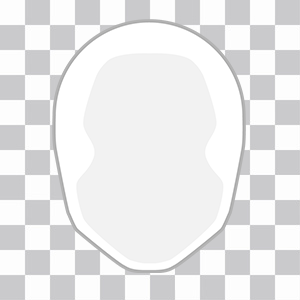

The avatarMaker has been designed with flexibility in mind. You can easily add layers by editing a couple of lines of code and items by copying them into a folder.
You can add a new layer in 4 simple steps:
KEY => VALUE pair to the $avatar_layers array in the configuration file (More info here: Avatar layers).KEY => VALUE pair in your currently selected localization file to give a name to the new layer (More info here: Custom language)..index.html file and locate, around line 104, the list of all layers in the menu. Add a new li items like the existing ones, where avm-layerId will be set to the id of the new layer and avm-local to the id of the line in the localization file.
The new layer should now be working as expected.
Adding new item is easy as uploading a file into a folder. From version 3.1 the base images can be of any size and not just square like in previous releases. Remember to set the appropriate measures in the configuration file.
If you want to create new items, you can start from scratch or extend the default set using the supplied illustrator file. Once you have finished drawing, export it as a png and upload it to the appropriate category folder in the assets directory. The new item will be recognized automagically and will but available in the client app after clearing the cache.
Warning
Due to the caching system used by the avatarMaker, after uploading a new item you must manually clear the cache folder (Do not delete the folder itself) or it will be ignored.
Here are some examples of how items should be to work properly:
| Item | Note |
|---|---|
|  | If an item will not be colored by the avatarMaker you can use colors in it, they will not be altered. |
|  | Items that will be tinted must be grayscale only or the final image will not be colored properly. The image will be converted in a gradient between the tint color and black. |
mouth category) you may be able to use transparencies.